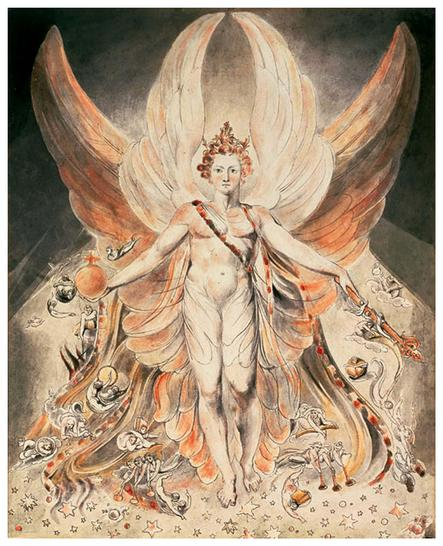

Fourscore and seven years ago our fathers brought forth on this continent, a new nation, conceived in Liberty, and dedicated to the proposition that all men are created equal.
Now we are engaged in a great civil war, testing whether that nation, or any nation so conceived and so dedicated, can long endure. We are met on a great battle-field of that war. We have come to dedicate a portion of that field, as a final resting place for those who here gave their lives that that nation might live. It is altogether fitting and proper that we should do this.
But, in a larger sense, we can not dedicate-we can not consecrate-we can not hallow-this ground. The brave men, living and dead, who struggled here, have consecrated it, far above our poor power to add or detract. The world will little note, nor long remember what we say here, but it can never forget what they did here. It is for us the living, rather, to be dedicated here to the unfinished work which they who fought here have thus far so nobly advanced. It is rather for us to be here dedicated to the great task remaining before us-that from these honored dead we take increased devotion to that cause for which they gave the last full measure of devotion-that we here highly resolve that these dead shall not have died in vain-that this nation, under God, shall have a new birth of freedom-and that government of the people, by the people, for the people shall not perish from the earth.
Enlightenment means taking full responsibility for your life.
- William Blake ( maybe )
To see the world in a grain of sand, and to see heaven in a wild flower, hold infinity in the palm of your hands, and eternity in an hour.
- William Blake ( maybe )
If the doors of perception were cleansed everything would appear to man as it is, infinite.
- William Blake ( maybe )
Great things are done when men and mountains meet.
- William Blake ( maybe )
If the Sun and Moon should ever doubt, they'd immediately go out.
- ditto
Art is the tree of life. Science is the tree of death.
- ditto

Tyger Tyger, burning bright,
In the forests of the night;
What immortal hand or eye,
Could frame thy fearful symmetry?
In what distant deeps or skies.
Burnt the fire of thine eyes?
On what wings dare he aspire?
What the hand, dare seize the fire?
And what shoulder, & what art,
Could twist the sinews of thy heart?
And when thy heart began to beat,
What dread hand? & what dread feet?
What the hammer? what the chain,
In what furnace was thy brain?
What the anvil? what dread grasp,
Dare its deadly terrors clasp!
When the stars threw down their spears
And water'd heaven with their tears:
Did he smile his work to see?
Did he who made the Lamb make thee?
Tyger Tyger burning bright,
In the forests of the night:
What immortal hand or eye,
Dare frame thy fearful symmetry?
For next time: start at the image maps thing, maybe make it a new page